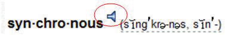

One of the problems with learning a new vocabulary in an online class is that you do not get to hear the instructor pronounce the terms. If the pronunciation is not obvious from the spelling, it can be embarrassing if you say the word incorrectly. Fortunately, several online dictionaries have features that say the word. You must have speakers or headphones attached to the computer, and they must be enabled.
Obtain speakers or headphones and plug them into the audio output jack on your computer. The location of this jack on computers varies greatly, but it is usually green as shown in Figure 1.10 "Audio Output Ports on Three Computers".
Figure 1.10 Audio Output Ports on Three Computers

The term is displayed with a phonetic spelling and a speaker icon, as shown in Figure 1.11 "Pronunciation Option in an Online Dictionary".
Figure 1.11 Pronunciation Option in an Online Dictionary
Source: www.thefreedictionary.com.
Review your work and use the following rubric to determine its adequacy:
| Element | Best | Adequate | Poor |
|---|---|---|---|
| File name | N/A | ||
| Used an online audio aid to learn to pronounce terms correctly | Used a browser to open an online dictionary that has an audio feature for pronouncing terms that is indicated by an icon | Same as Best | Choice of a website that does not include audio pronunciations or has an inability to activate the audio output |